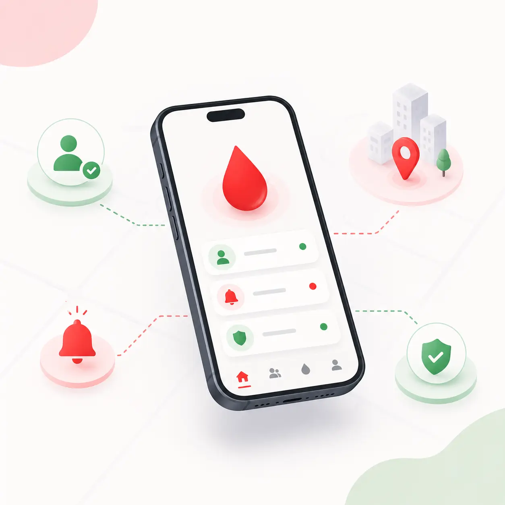

You may never need this app. But your father, mother, or best friend might — at 2am, with no one to call. Install once. Be ready forever.
Most people install this before an emergency — for someone they love. Here's why it changes everything.
Panic & Confusion: Manually texting friends, family, and WhatsApp groups hoping someone replies.
Wasting Time: Searching websites for static numbers and calling strangers one by one, only to find they are unavailable.
High Tension: Blindly calling everyone in your contact list in an emergency, wasting precious time.
Instant Matching: You raise a request. We instantly find registered, eligible donors in your own contact list.
Zero Spam Calls: You get a clean list of people who have explicitly said "Yes, I will donate." You only call them.
City-Wide Backup: If no one in your contacts is available, we directly and instantly expand the search across your city—without waiting.
A smart two-stage system designed to notify your trusted circle first, expanding across your city only when you need more help.
When an emergency begins, BloodRadar privately checks your phone contacts to alert matching donors you already know. Your trusted circle is reached immediately without disturbing strangers.
If your contacts are unavailable or in critical ICU emergencies, BloodRadar instantly alerts verified matching donors within 10km of the hospital.
Every detail is designed to save precious time and remove friction when a human life is on the line.
Alerts only nearby donors around the hospital to ensure fast arrival during urgent trauma windows.
Your phone number stays encrypted and hidden. Calls are only connected when a donor agrees to help.
Dedicated matching for rare and universal blood types, including Bombay (hh) and Rh-null.
Sign up in one second with zero OTP delays, so you're always ready before an emergency strikes.
Protects donor health by enforcing official 90-day recovery intervals between donations.
Zero ads, zero fees, and no paid blood. Built purely to save lives through voluntary kindness.
In an emergency, your hands shake and your mind goes blank. BloodRadar is designed so that even then, anyone can find help in seconds.
Instantly find willing, eligible donors from your own phonebook without spamming anyone.
If no one in your contacts can help, the app silently expands to find a willing stranger nearby — no extra steps needed.
When your blood type is needed nearby, you get an urgent alert — even if your phone is on silent.

No subscriptions. No middleman charges. No commercial blood trading. Built purely to connect willing donors with critical patients when seconds matter most.
Select any blood group to see who you can safely donate to and receive blood from:
Official safety standards from the National AIDS Control Organisation (NACO) to protect both donors and recipients.
Donors should be between 18 and 65 years old and feeling healthy on the day of donation.
A minimum weight of 45 kg ensures safe donation and a smooth, fast recovery.
Wait 3 months (90 days) between donations to allow your body to naturally replenish healthy iron levels.
A quick hemoglobin check (at least 12.5 g/dL) and normal blood pressure ensure you are fit to donate.
Every blood unit is tested and cross-matched by certified hospital blood banks before transfusion.
Donation must always be voluntary and unpaid. Buying or selling blood is strictly illegal under Indian law.
Setup takes under 60 seconds — just your name and blood group. Then forget about it. It works quietly in the background until the day someone you love needs it.
📲 Share this with your family WhatsApp group. It costs nothing. It could save everything.